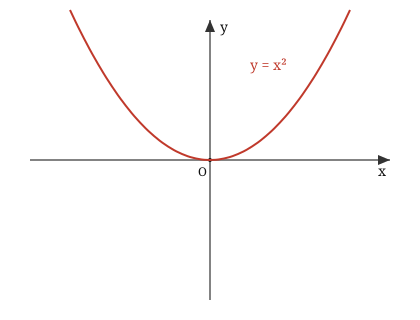
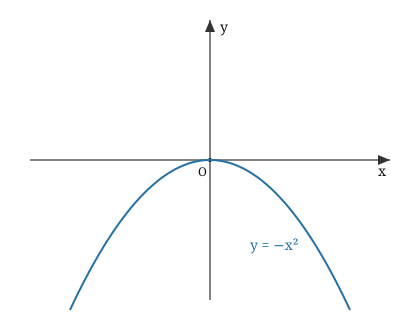
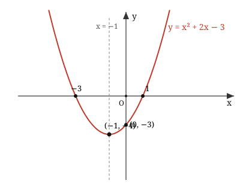

<script>if(location.hostname.endsWith('onrender.com'))location.replace('https://math-sandbox.pages.dev'+location.pathname+location.search+location.hash)</script>
<section class="theory" data-section="IGCSE-18.1">
<h2>18.1 Review of quadratic graphs (the parabola)</h2>
<p class="src">Based on Cambridge IGCSE Mathematics Core and Extended Coursebook, 3rd edition (Karen Morrison and Nick Hamshaw), Chapter 18 Curved graphs, printed pp.584–595 (review of the parabola, axis of symmetry, turning point, intercepts, and Exercise 18.3). The printed pages were read from rendered scans (the coursebook PDF is a CamScanner image with no text layer). Own wording and new numbers.</p>
<p class="key-words"><strong>Key words:</strong> <em>parabola</em>, <em>axis of symmetry</em>, <em>turning point</em>, <em>y-intercept</em>, <em>x-intercepts</em></p>
<h3>The shape of \(y=ax^2+bx+c\)</h3>
<p>The graph of a quadratic function \(y=ax^2+bx+c\), with \(a\neq 0\), is a <strong>parabola</strong>.</p>
<ul>
<li>If \(a\gt 0\), the parabola is a valley: it opens upwards and has a <strong>minimum</strong> point.</li>
<li>If \(a\lt 0\), the parabola is a hill: it opens downwards and has a <strong>maximum</strong> point.</li>
</ul>
<figure><figcaption>\(y=x^2\): a valley, minimum at the origin.</figcaption></figure><figure><figcaption>\(y=-x^2\): a hill, maximum at the origin.</figcaption></figure>
<p>The simplest members of the family are \(y=x^2\) and \(y=-x^2\). Stretching or reflecting, and then translating, gives every other quadratic graph, but you do not need a completed-square form to sketch accurately: the axis, turning point and intercepts are enough.</p>
<h3>Axis of symmetry and turning point</h3>
<p>Every parabola has a vertical <strong>axis of symmetry</strong>. For \(y=ax^2+bx+c\), its equation is</p>
$$x=-\frac{b}{2a}$$
<p>The <strong>turning point</strong> (the minimum or maximum) lies on this axis. Find its \(x\)-coordinate from the formula, then substitute into the equation of the curve to find the \(y\)-coordinate.</p>
<p>If the graph crosses the \(x\)-axis at two points, the axis of symmetry is halfway between those <strong>roots</strong> (it is the midpoint of the \(x\)-intercepts).</p>
<h3>Intercepts</h3>
<p>A sketch should also show the <strong>y-intercept</strong> and any <strong>x-intercepts</strong>.</p>
<ul>
<li>The y-intercept is the point \((0,c)\). Put \(x=0\).</li>
<li>The x-intercepts, if they exist, are the roots of \(ax^2+bx+c=0\). Factorise, or use the quadratic formula.</li>
</ul>
<p>A parabola may cross the \(x\)-axis twice, touch it once (the turning point is then on the \(x\)-axis), or miss it completely.</p>
<div class="ms-widget" data-widget="parabola" data-a="1" data-b="2" data-c="-3"></div>
<div class="worked-example">
<h4>Worked example 1: Axis, turning point and intercepts</h4>
<p class="src">Book: review of quadratic graphs, pp.584–595; style of Exercise 18.3 Q2.</p>
<p>For the curve \(y=x^2+2x-3\), find the axis of symmetry, the turning point, and the intercepts. Hence sketch the graph.</p>
<ol class="steps">
<li>\(a=1\), \(b=2\), so the axis is \(x=-\dfrac{2}{2\times 1}=-1\) <span class="mark">M1</span></li>
<li>When \(x=-1\), \(y=(-1)^2+2(-1)-3=1-2-3=-4\). The turning point is \((-1,-4)\) <span class="mark">A1</span></li>
<li>\(a\gt 0\), so this is a minimum. The \(y\)-intercept is \((0,-3)\) <span class="mark">B1</span></li>
<li>\(x^2+2x-3=0\Rightarrow (x+3)(x-1)=0\), so the \(x\)-intercepts are \((-3,0)\) and \((1,0)\) <span class="mark">A1</span></li>
<li>Check: the midpoint of the roots is \(\dfrac{-3+1}{2}=-1\), which agrees with the axis.</li>
</ol>
<p class="final"><strong>Answer:</strong> axis \(x=-1\); turning point \((-1,-4)\); intercepts \((0,-3)\), \((-3,0)\) and \((1,0)\).</p>
<div class="ms-widget" data-widget="parabola" data-a="1" data-b="2" data-c="-3">
<figure class="ms-widget-fallback"><figcaption>Sketch of \(y=x^2+2x-3\), showing the axis \(x=-1\) and the intercepts.</figcaption></figure>
</div>
</div>
<div class="worked-example">
<h4>Worked example 2: A hill</h4>
<p class="src">Book: Exercise 18.3 style, p.595 (for example Q2e, graphs with a negative \(x^2\) term).</p>
<p>Find the axis of symmetry and the turning point of \(y=17+6x-x^2\).</p>
<ol class="steps">
<li>\(a=-1\), \(b=6\), so \(x=-\dfrac{6}{2\times(-1)}=3\) <span class="mark">M1</span></li>
<li>When \(x=3\), \(y=17+6\times 3-3^2=17+18-9=26\) <span class="mark">A1</span></li>
<li>\(a\lt 0\), so the turning point \((3,26)\) is a maximum <span class="mark">B1</span></li>
</ol>
<p class="final"><strong>Answer:</strong> axis \(x=3\); maximum at \((3,26)\).</p>
</div>
<div class="worked-example">
<h4>Worked example 3: A completed table of values</h4>
<p class="src">Book: drawing quadratic graphs from a table, pp.584–595.</p>
<p>Complete the value of \(y=x^2-6x+5\) when \(x=4\).</p>
<ol class="steps">
<li>\(y=4^2-6\times 4+5=16-24+5\) <span class="mark">M1</span></li>
<li>\(=-3\) <span class="mark">A1</span></li>
</ol>
<p class="final"><strong>Answer:</strong> \(-3\)</p>
</div>
<h3>A sketching checklist</h3>
<ol>
<li>Look at the sign of \(a\): valley or hill?</li>
<li>Write down the axis \(x=-\dfrac{b}{2a}\) and the turning point.</li>
<li>Mark the \(y\)-intercept \((0,c)\).</li>
<li>Solve \(y=0\) for any \(x\)-intercepts.</li>
<li>Sketch a smooth, symmetrical curve through these features. Do not draw a pointed “V” at the turning point, and do not let the curve become a straight line far from the axis.</li>
</ol>
<p class="note">This course finds turning points from the axis formula \(x=-\dfrac{b}{2a}\), not by differentiation. (Differentiation is not required here.)</p>
<h3>Common mistakes</h3>
<ul>
<li>Using \(x=\dfrac{b}{2a}\) and dropping the minus sign.</li>
<li>Stopping once the axis is found, and not substituting to get the \(y\)-coordinate of the turning point.</li>
<li>Taking the \(y\)-intercept to be \(a\) rather than \(c\).</li>
<li>Joining plotted points with straight line segments instead of a smooth curve.</li>
</ul>
<h3>Quick checks</h3>
<div class="quick-check">
<h4>Quick check 1</h4>
<p>Find the axis of symmetry of \(y=2x^2-8x+3\).</p>
<details><summary>Worked solution</summary>
<ol class="steps">
<li>\(a=2\), \(b=-8\), so \(x=-\dfrac{-8}{2\times 2}\) <span class="mark">M1</span></li>
<li>\(x=\dfrac{8}{4}=2\) <span class="mark">A1</span></li>
</ol>
<p class="final"><strong>Answer:</strong> \(x=2\)</p>
</details>
</div>
<div class="quick-check">
<h4>Quick check 2</h4>
<p>Find the \(y\)-coordinate of the turning point of \(y=2x^2-8x+3\).</p>
<details><summary>Worked solution</summary>
<ol class="steps">
<li>From Quick check 1, the axis is \(x=2\). Substitute: \(y=2(2)^2-8(2)+3=8-16+3\) <span class="mark">M1</span></li>
<li>\(y=-5\) <span class="mark">A1</span></li>
</ol>
<p class="final"><strong>Answer:</strong> \(-5\)</p>
</details>
</div>
<div class="quick-check">
<h4>Quick check 3</h4>
<p>Write down the \(y\)-intercept of \(y=-3x^2+5x-7\).</p>
<details><summary>Worked solution</summary>
<ol class="steps">
<li>Put \(x=0\): \(y=-7\) <span class="mark">B1</span></li>
</ol>
<p class="final"><strong>Answer:</strong> \(-7\) (the point is \((0,-7)\))</p>
</details>
</div>
<div class="quick-check">
<h4>Quick check 4</h4>
<p>Find the value of \(y=x^2-5x+3\) when \(x=-1\).</p>
<details><summary>Worked solution</summary>
<ol class="steps">
<li>\(y=(-1)^2-5(-1)+3=1+5+3=9\) <span class="mark">B1</span></li>
</ol>
<p class="final"><strong>Answer:</strong> \(9\)</p>
</details>
</div>
<p class="marks-key"><strong>Marks:</strong> M = method, A = accurate answer (depends on M), B = independent mark. Leave coordinates exact. Do not use calculus to find turning points in this section.</p>
</section>
